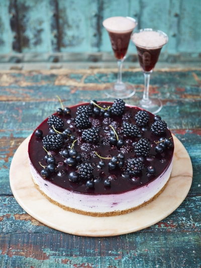

Nagerecht: Blackcurrant ombré cheesecake


- 100 gram ongezouten boter
Boter komt uit Nederland. Nederland is een centrum land. Boter is geen seizoensproduct.
- 300 gram haverkoekjes
Dit komt ook uit Nederland. Nederland is een centrum land. Haver is een seizoensproduct. Haver is een seizoensproduct.
- 1 vanillestokje
Dit komt uit Madagascar. Madagascar is een periferie land. Vanille word niet in Nederland gekweekt omdat de vanille-orchidee alleen in tropische klimaten kan groeien. Vanille is geen seizoensproduct.
- 500 gram lichte roomkaas
Dit komt ook al uit Nederland. Nederland is een centrum land. Kaas is geen seizoensproduct.
- 510 gram zwarte bessen jam
Dit product wordt ook gemaakt in ons klein maar veel producerend landje Nederland. Nederland is een centrum land. Bosbessen zijn seizoensproducten.
- 4 vellen gelatine
Wat bijna ons laatste product is wat in Nederland wordt gemaakt. Nederland is een centrum land. Gelatine is een seizoensproduct.
- 200 gram zwarte bessen en bramen, plus extra om te versieren
Dit is een seizoensproduct. In de winter komt het uit Chili en in de zomer uit Nederland Nederland is een centrum land maar Chili een semi-periferie land. Zwarte bessen en bramen zijn allebei seizoensproducten.
Back